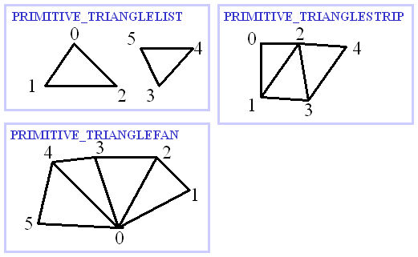
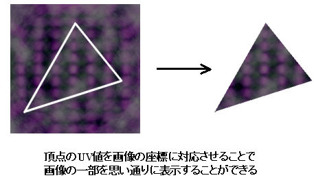
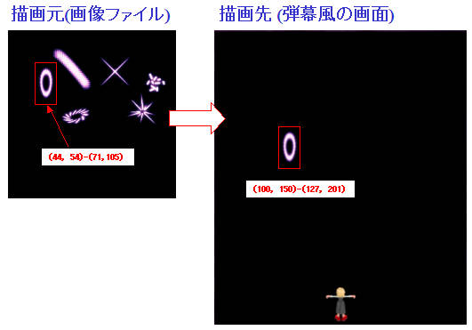
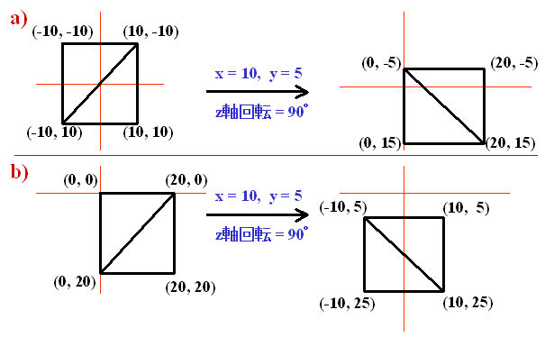
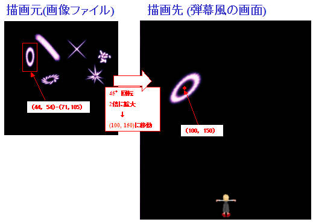
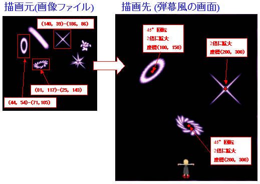
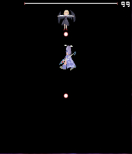

画像表示の説明です。
| SampleRA | 描画オブジェクト(解説) |
| RA01 | 描画オブジェクト |
| RA02 | テクスチャ・ポリゴン・頂点 |
| RA03 | プリミティブ |
| RA05 | 頂点のUV値 |
| SampleRB | 描画オブジェクトサンプル(2D) |
| RB01 | 矩形(長方形)画像の描画 |
| RB02 | 矩形画像の回転・拡大 |
| RB03 | 複数の矩形画像の描画 |
| SampleRD | 描画オブジェクトサンプル(3Dモデル) |
| RD02 | 自機や敵に3Dモデルを使用 |
| RA01 描画オブジェクト |
|
(このあたりはとばして、SampleRBからの実際の使用例から読んだ方がわかりやすいかもしれません。) 描画オブジェクトは東方弾幕風画面内に絵を表示するための機能で、 おおまかには以下のように画面に表示する画像を設定します。 1)ObjPrim_Createで描画オブジェクトを生成する。 2)ObjPrim_SetTextureで描画オブジェクトに、 画面に表示する画像ファイルを設定する。 3)画像ファイルの表示する範囲(描画元の範囲)を設定する。 (この関数は種類が多いので別途解説) 4)描画先の位置を設定する。(この関数も種類が多いので別途解説) 5)その他の必要な設定を行う。(描画優先度、回転、拡大、透明度など) 上記それぞれの設定には、テクスチャ、ポリゴンという要素がかかわってきます。 |
| RA02 テクスチャ・ポリゴン |
|
東方弾幕風は2Dゲームですが、描画には3Dグラフィクスの機能を用いています。 3Dといえば、よくテクスチャとかポリゴンとか聞くと思います。 テクスチャとは画像です。絵です。 ポリゴンとは3Dグラフィクスで物体をあらわすのに用いる多角形のことです。 ポリゴンを表すのに用いられるのが頂点です 例えば、三角形を表すには、3つの頂点が必要です。 (3つの点を結べば三角形になりますよね) ポリゴンはほとんどが三角形の集合で表されます。 三角形は凸な角だけで構成されたりして都合がよいのです。 さて、弾幕風の自機の画像も、弾の画像も画像ファイルから読み込んだテクスチャの一部を 四角形に切り取って画面に貼り付けているのは、見ただけで分かると思います。 その四角形もポリゴンなのです。 四角形のポリゴンにテクスチャを貼り付けて、絵を表示しているのです。 |
| RA03 プリミティブ |
|
ポリゴンは三角形の集合で表されます。 しかしながら、どのような頂点の並びでどのような三角形の集合を あらわすのか決めないと困ってしまいます。 頂点の並びで定義される図形を決めてやらないといけません。 この頂点の並びで定義される図形をプリミティブといいます。 このプリミティブには三種類が用意されています。  例えば四角形を表すには、TRIANGLELISTでは6つの頂点が必要になりますが、 TRAIANGLESTRIPやTRAIANGLEFANでは4つの頂点で表すことができます。 それでは、よくSTGにでてくる曲がるレーザーにはどれが使いやすいでしょうか。 曲がるレーザーにはTRAIANGLESTRIPが使いやすいですよね。 TRAIANGLESTRIPは、最初の頂点からはしご上に連結した形状を表すので 曲がるレーザーのように、途中が曲がったものには最適なのです。 もちろん、TRAIANGLELISTは、ある意味どんな図形でも表現できるので 当然曲がるレーザーを表現することもできますが、 頂点の数が多くなるので面倒なのです。 |
| RA04 頂点のUV値 |
|
UV値はテクスチャ画像における座標をあらわします。 本来は、0-1の値をとります(まあ0-1以外の値をとることもできますが)が、 弾幕風では、画像のx座標がuにy座標がvにそのまま対応します。 ポリゴンを描画するときに、各頂点のUV値をもとにポリゴン上の1点1点が テクスチャ上のどの位置を参照しているのかを求めています。 大雑把にまとめると 画像の切り抜き部分を指定するのがUV値です。 頂点の座標とUV値は異なったものなので、画像を歪めて表示したりもできます。  |
| RB01 矩形(長方形)画像の描画 |
|
もっとも単純な矩形(長方形)を描画する方法は、 ObjPrim_CreateにOBJ_SPRITE_2Dをわたして生成したオブジェクトを使う方法です。 次の例では、 描画元矩形指定：ObjSprite2D_SetSourceRect 描画先矩形指定：ObjSprite2D_SetDestRect を使用し、画像ファイルの(44, 54)-(71,105)を切り出して、(100, 150)-(127, 201)に表示しています。  |
#東方弾幕風[Stage] #ScriptVersion[3] #Title["SampleRB01"] #Text["SampleRB01：矩形(長方形)画像の描画"] @Initialize { TSample(); } @MainLoop { yield; } task TSample { //画像パス設定 let dir = GetCurrentScriptDirectory(); let path = dir ~ "Effect01.png"; let obj = ObjPrim_Create(OBJ_SPRITE_2D); //2Dスプライトオブジェクト生成 Obj_SetRenderPriorityI(obj, 21); //描画優先度を設定 ObjPrim_SetTexture(obj, path); //テクスチャを設定 ObjSprite2D_SetSourceRect(obj, 44, 54, 71, 105); //描画元設定(44, 54)-(71,105) ObjSprite2D_SetDestRect(obj, 100, 150, 127, 201); //描画先設定(100, 150)-(127, 201) //240フレーム待機 loop(240){yield;} Obj_Delete(obj); //描画オブジェクト削除 //ステージ終了 CloseStgScene(); }
| RB02 矩形(長方形)画像の回転・拡大 |
|
画像の回転にはObjRender_SetAngleXYZ、拡大にはObjRender_SetScaleXYZなどを使いますが、 このとき気をつけなければならないのは回転と拡大の中心がどこにあるかということです。 例えば、↓の図の a と b は、同じ大きさの四角形になるように頂点の座標を配置していますが、 回転の中心が異なっているため、最終的な描画位置が違っています。  ここでSampleRB01にでてきたObjSprite2D_SetDestRectを考えてみましょう。 この関数は描画先矩形を指定するとかきましたが、実際には回転、拡大前の頂点の座標を設定しています。 上記の図では左側の図がObjSprite2D_SetDestRect直後の位置です。 回転や拡大の座標変換は、この状態の頂点に対して(0, 0)を中心に行われます。 したがって、回転拡大のある描画は以下の手順をふみます。 1) ObjSprite2D_SetDestRect(※)で回転拡大の中心を考えて頂点を配置する。 2) ObjRender_SetAngleXYZ、ObjRender_SetScaleXYZなどで回転拡大を行う。 3) ObjRender_SetPositionで表示したい位置に移動する。 ※画像の中心を回転拡大の中心にすることはよくあるので、 自動で中心にあわせてくれる関数(=ObjSprite2D_SetDestCenter)を準備しています。  |
#東方弾幕風[Stage] #ScriptVersion[3] #Title["SampleRB02"] #Text["SampleRB02：矩形(長方形)画像の回転・拡大"] @Initialize { TSample(); } @MainLoop { yield; } task TSample { //画像パス設定 let dir = GetCurrentScriptDirectory(); let path = dir ~ "Effect01.png"; let obj = ObjPrim_Create(OBJ_SPRITE_2D); //2Dスプライトオブジェクト生成 Obj_SetRenderPriorityI(obj, 21); //描画優先度を設定 ObjPrim_SetTexture(obj, path); //テクスチャを設定 ObjSprite2D_SetSourceRect(obj, 44, 54, 71, 105); //描画元設定(44, 54)-(71,105) ObjSprite2D_SetDestCenter(obj); //頂点を(0, 0)中心に配置 ObjRender_SetAngleZ(obj, 45); //45°回転 ObjRender_SetScaleXYZ(obj, 2, 2, 1); //X,Y方向に2倍に拡大 ObjRender_SetPosition(obj, 100, 150, 0); //(100, 150)に移動 //240フレーム待機 loop(240){yield;} Obj_Delete(obj); //描画オブジェクト削除 //ステージ終了 CloseStgScene(); }
| RB03 複数の矩形画像の描画 |
|
SampleRB01、02で矩形の描画を行いましたが、 矩形1つ1つにObjPrim_Createでオブジェクトを生成すると記述が面倒です。 ScriptVersion[2]では@DrawLoop内で、以下のように複数の描画を行うことができました。 1) SetTextureでテクスチャを設定。 2) SetGraphicRectで描画元矩形を設定。 3) SetGraphicAngle、SetGraphicScaleで回転拡大。 4) DrawGraphicで描画。 5) 1-3を繰り返し次々と描画する。 上記と似たような処理を行うためのオブジェクトとして、SpriteList2Dがあります。 このオブジェクトは1つ生成するだけで複数の矩形を描画できます。 1) ObjPrim_Create(OBJ_SPRITE_LIST_2D)でオブジェクトを生成する。 2) ObjPrim_SetTextureでテクスチャを設定。 3) ObjSpriteList2D_SetSourceRectで描画元矩形を設定。 4) ObjRender_SetAngleXYZ、ObjRender_SetScaleXYZなどで回転拡大。 5) ObjSpriteList2D_AddVertexで3-4)の設定で描画対象に追加。 6) 3-5を繰り返し、次々と描画矩形を追加する。 このとき、描画元矩形、回転、拡大、透明度などは再設定しない限り 再設定前の値を引き継ぎます。 ただし、優先度、テクスチャは1オブジェクトにつき1値しか適応できません。 追加した描画矩形をクリアする場合は、 ObjSpriteList2D_ClearVertexCountを呼び出します。 (追加した矩形は1フレーム毎に自動でクリアされたりはしません。 @DrawLoopと似た感じで使うには、 毎フレームにObjSpriteList2D_ClearVertexCountでクリアする必要があります。)  |
#東方弾幕風[Stage] #ScriptVersion[3] #Title["SampleRB03"] #Text["SampleRB03：複数の矩形画像の描画"] @Initialize { TSample(); } @MainLoop { yield; } task TSample { //画像パス設定 let dir = GetCurrentScriptDirectory(); let path = dir ~ "Effect01.png"; let obj = ObjPrim_Create(OBJ_SPRITE_LIST_2D); //2Dスプライトリストオブジェクト生成 Obj_SetRenderPriorityI(obj, 21); //描画優先度を設定 ObjPrim_SetTexture(obj, path); //テクスチャを設定 //1つめ：描画元(44, 54)-(71,105)を45°回転、2倍拡大で、(100, 150)に描画 ObjSpriteList2D_SetSourceRect(obj, 44, 54, 71, 105); //描画元設定(44, 54)-(71,105) ObjSpriteList2D_SetDestCenter(obj); //頂点を(0, 0)中心に配置 ObjRender_SetAngleZ(obj, 45); //45°回転 ObjRender_SetScaleXYZ(obj, 2, 2, 1); //X,Y方向に2倍に拡大 ObjRender_SetPosition(obj, 100, 150, 0); //(100, 150)に移動 ObjSpriteList2D_AddVertex(obj); //描画対象追加 //2つめ：描画元(81, 117)-(25, 143)を45°回転、2倍拡大で、(200, 300)に描画 ObjSpriteList2D_SetSourceRect(obj, 81, 117, 125, 143); //描画元設定(81, 117)-(25, 143) ObjSpriteList2D_SetDestCenter(obj); //頂点を(0, 0)中心に配置 ObjRender_SetPosition(obj, 200, 300, 0); //(200, 300)に移動 ObjSpriteList2D_AddVertex(obj); //描画対象追加 //3つめ：描画元(140, 39)-(186, 86)を0°回転、2倍拡大で、(300, 200)に描画 ObjSpriteList2D_SetSourceRect(obj, 140, 39, 186, 86); //描画元設定(140, 39)-(186, 86) ObjSpriteList2D_SetDestCenter(obj); //頂点を(0, 0)中心に配置 ObjRender_SetAngleZ(obj, 0); //0°回転 ObjRender_SetPosition(obj, 300, 200, 0); //(300, 200)に移動 ObjSpriteList2D_AddVertex(obj); //描画対象追加 //240フレーム待機 loop(240){yield;} Obj_Delete(obj); //描画オブジェクト削除 //ステージ終了 CloseStgScene(); }
| RD02 自機や敵に3Dモデルを使用 |
|
自機や敵に3Dモデルを使用する場合、ObjMesh_SetCoordinate2Dを使用します。 ObjMesh_SetCoordinate2Dを使用することで、 2D座標指定で3Dモデルを表示することができます。  |
//〜〜〜画像表示タスクなど let path = GetCurrentScriptDirectory() ~ "UnitMesh_Euphoria.elem"; let obj = ObjMesh_Create(); ObjMesh_Load(obj, path); //3Dメッシュを読み込む ObjMesh_SetCoordinate2D(obj, true); //2D座標モードに切り替える ObjRender_SetAngleZ(obj, 180); //上下反転(3Dモデル作成時はy軸は上方向、2D画面はy軸は下方向のため) ObjRender_SetScaleXYZ(obj, 0.5, 0.5, 0.5); //拡大率を設定 let frame = 0; loop { //キーの状態によってモデルを傾けたりする if(GetVirtualKeyState(VK_LEFT) == KEY_PUSH || GetVirtualKeyState(VK_LEFT) == KEY_HOLD) { ObjRender_SetAngleY(obj, 45); } else if(GetVirtualKeyState(VK_RIGHT) == KEY_PUSH || GetVirtualKeyState(VK_RIGHT) == KEY_HOLD) { ObjRender_SetAngleY(obj, -45); } else { ObjRender_SetAngleY(obj, 0); } ObjRender_SetPosition(obj, GetPlayerX, GetPlayerY, 0); //自機の位置をモデルに適応する ObjMesh_SetAnimation(obj, "AnimeName", frame); //アニメを設定 frame++; yield; }